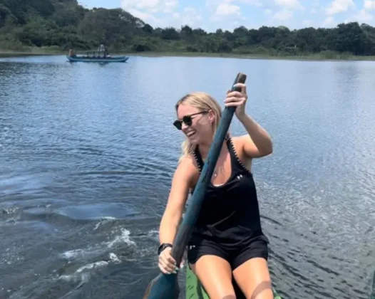
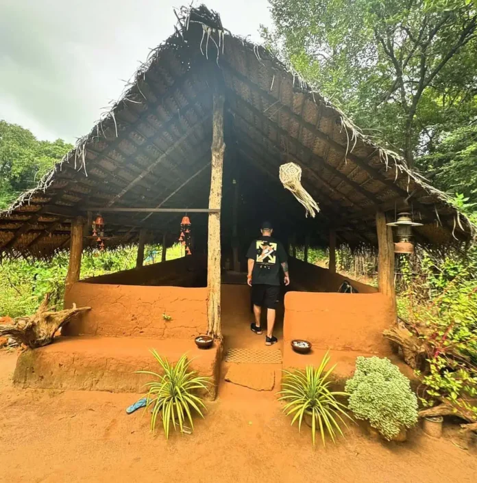
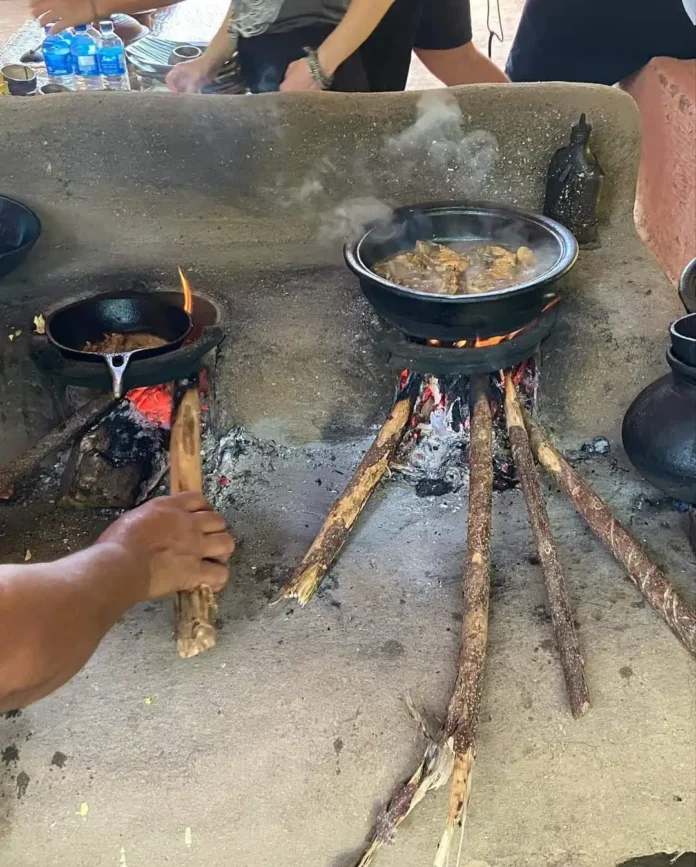
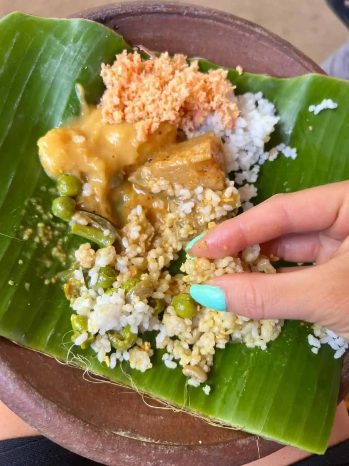

Exploring the Sigiriya Village Tour in Sri Lanka
The Sigiriya Village Tour is a popular activity among tourists visiting Sri Lanka. This immersive experience is provided by the local villagers around the iconic Sigiriya rock and offers a unique blend of different experiences. In this article, we delve into the details of this activity.
What is the Sigiriya Village Tour?
The Sigiriya Village Tour offers foreigners an authentic glimpse into the lifestyle of ancient rural Sri Lankan people. Conducted in collaboration with well-organized villagers and housewives, tourists gain a deeper understanding of the real living style of the ancient Sri Lankan countryside people. You'll have the opportunity to explore the beauty of the Sri Lankan countryside, engage in traditional village activities, and experience the ancient modes of transportation, farming, paddy fields, irrigation systems, local customs, and hospitality.
The tour commences with a look at the modes of transportation used by Sri Lankans in the past, including those used to cross lakes and rivers. You'll be taken across a serene lake to see ancient-style village houses and get a chance to experience parts of the daily routine of a traditional homesteader. Here, you can closely observe some of the tactics, tools, and cooking processes they use. You'll also get to taste the food they prepare right in front of you.
Experiences from the Sigiriya Village Tour
Bullock Cart Ride
Your tour begins with a bullock cart ride, a mode of transportation that was popular in Sri Lanka in the distant past. These carts were often used to transport goods and people from the capital city to the village and vice versa.
Carts were also used to transport goods and people around the island from Colombo, even to mountainous areas like Badulla through challenging roads for several days. These long journey carts had roofs, and several carts would travel together, assisting each other and reciting poems. The village tour gives you a real sense of this mode of transport using preserved carts and trained bullocks.
Catamaran Boat Ride
After reaching the beautiful lake by bullock cart, you'll embark on a Catamaran boat ride. You'll be taken across the lake to the other side of the village. The rider will craft a beautiful necklace out of a water lily flower plucked from the lake and place it around your neck. If you wish, you'll also have the opportunity to steer the boat.
Visit to a Village House
Post the boat ride, you'll visit a traditional village house. Here, you can gain insights into the homes of the Sri Lankan villagers of yesteryear. You'll see the roof made of coconut fronds, the floor made of dried soil, the kitchen used by the village women, and the wood stove. You'll also see some kitchen tools such as a mortar and stone grinding tools that have been in use since the last century.
Cooking Demonstration
The village housewives will demonstrate how to prepare Sri Lankan food. They'll show you daily life activities such as grain making and coconut peeling using traditional kitchen equipment. Following this, they'll guide you on how to prepare a traditional meal using these ingredients.
Traditional Lunch Experience
The final part of the village tour is the opportunity to savor a traditional meal. You'll be served food in Sri Lankan style, including the dishes prepared in front of you and other traditional food by the housekeepers. This includes traditional sweets as well.
We hope this article provides a comprehensive overview of the Sigiriya Village Tour and encourages you to partake in this enriching experience. Enjoy your journey into the heart of Sri Lanka's countryside!